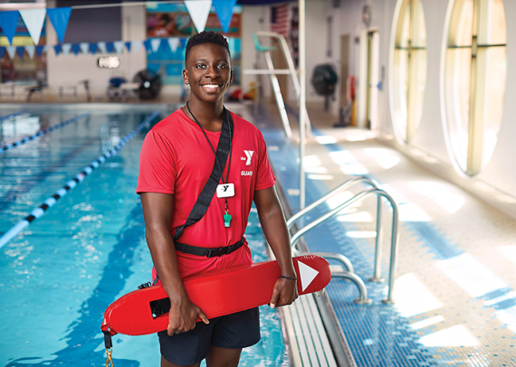

Basketball is a sport that has become a big part of my identity since the start of high school. I play everyday and am always thinking about and working on ways to improve my game both physically and mentally. I first fell in love with this sport during the pandemic and ended up playing hours and hours each and every day.
I have been a lifeguard this past year and have learned a lot from this experience. Becoming a lifeguard not only pays well, but it is also fullfilling because I am protecting the lives of many people every time I clock in for work. This job has also taught me valuable skills, such as CPR, that I will have in my back pocket for the rest of my life.